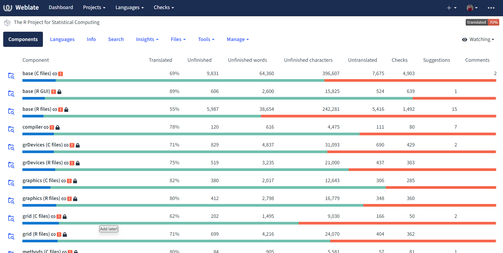
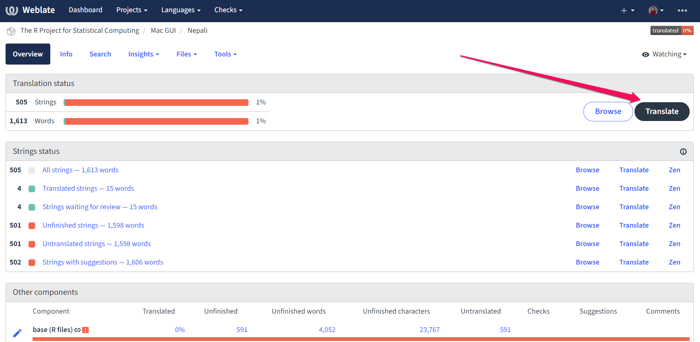
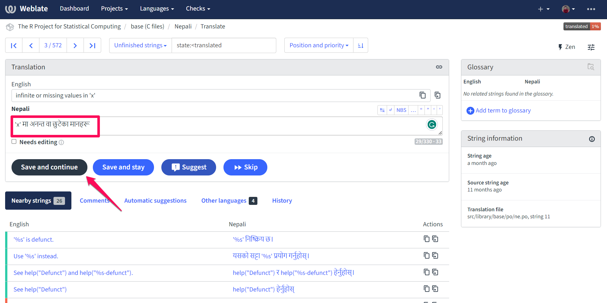
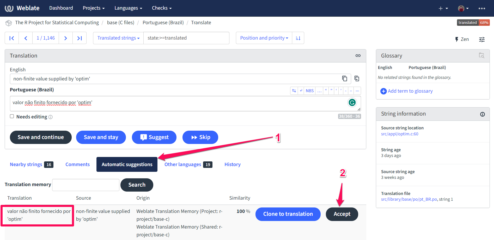
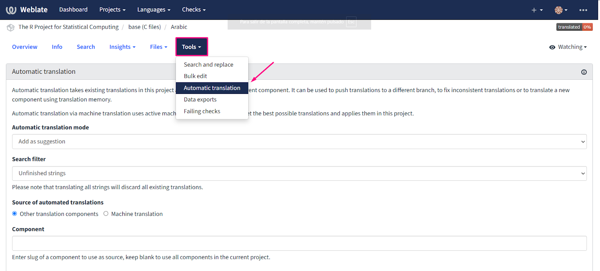
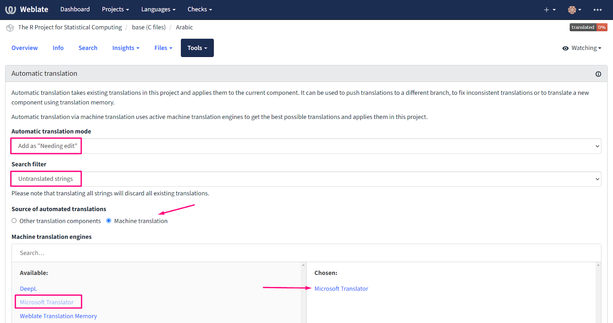

10 Message Translations
This chapter covers internationalization in R, i.e., the display of messages in languages other than English. All output in R (such as messages emitted by stop(), warning(), or message()) is eligible for translation, as are menu labels in the GUI. Depending on the version of R that you are using, some of the languages might already be available while others may need work. R leverages the gettext program to handle the conversion from English to arbitrary target languages.
Having messages available in other languages can be an important bridge for R learners not confident in English – rather than learning two things at once (coding in R and processing diagnostic information in English), they can focus on coding while getting more natural errors/warnings in their native tongue.
The gettext manual is a more canonical reference for a deep understanding of how gettext works. This chapter will just give a broad overview, with particular focus on how things work for R, with the goal of making it as low-friction as possible for developers and users to contribute new/updated translations.
10.1 How translations work
Each of the default packages distributed with R (i.e., those found in ./src/library such as base, utils, and stats and which have priority base) contains a po directory. A po directory is the central location for cataloguing/translating each package’s messages. It contains a template message file (.pot) for the corresponding package along with translated .po files (that are created using the template .pot file).
10.1.1 .pot files
A .pot file is a template file found inside the po directory of an R package. This template file is a snapshot of the messages available in a given domain. A domain in R typically identifies a source package and a source language (either R or C/C++). For example, the file R-stats.pot (found in the R sources in ./src/library/stats/po) is a catalogue of all messages produced by R code in the stats package, while stats.pot is a catalogue of all messages produced by C code in the stats package.
The ‘base’ package has two exceptions to the basic pattern described above. The first is the domain for messages produced by the C code which is the fundamental backing of R itself (especially, but not exclusively, the C code under ./src/main[^The file ./po/POTFILES is the canonical source of files searched. Note that while, technically, it is possible to support translations in Fortran code, R does not currently do so. Only a handful of messages are produced by Fortran routines in the R sources.]). The associated .pot file is R.pot and is found in ./src/library/base/po. R-base.potis a normal.potfile because base has a normalR` directory.
The second is the domain for the Windows R GUI, i.e., the text in the menus and elsewhere in the R GUI program available for running R on Windows. These messages are stored in the RGui.pot domain, also in the po directory for base, and are most commonly derived from C code found in ./src/gnuwin32. One reason to keep this domain separate is that it is only relevant to one platform (Windows). In particular, Windows has historically different character encodings, so that it made more sense for Windows developers to produce translations specifically or Windows, since it is non-trivial for non-Windows users to test their translations for the Windows GUI.
10.1.1.1 Generating .pot files
For outside contributors, there’s no need to update .pot files – translators will typically take the R .pot files as given and generate .po files. These will be sent along to a language-specific translation maintainer, who then compiles them to send to the R Core developer responsible for translations, who finally applies them as a patch.
To emphasize, this section is almost always not needed for contributing translations – it is here for completeness and edification.
10.1.2 .po files
.po files are the most important artifacts for translators. They provide the (human-readable!) mapping between the messages as they appear in the source code and how the messages will appear to users in translated locales.
10.1.2.1 Singular messages
Most messages appear as msgid/msgstr pairs. The former gives the message as it appears in the code, while the latter shows how it should appear in translation. For example, here is an error in German (locale: de) informing the user that their input must be of class POSIXt
msgid "'to' must be a \"POSIXt\" object"
msgstr "'to' muss ein \"POSIXt\" Objekt sein"See this in context in the R-de.po source file.
The same message can also be found in R-it.po giving the translation to Italian:
msgid "'to' must be a \"POSIXt\" object"
msgstr "'to' dev'essere un oggetto \"POSIXt\""10.1.2.2 Plural messages
Some messages will have different translations depending on some input determined at run time (e.g., the length() of an input object or the nrow() of a data.frame). This presents a challenge for translation, because different languages have different rules for how to pluralize different ordinal numbers[^See the relevant section of the gettext manual]. For example, English typically adds s to any quantity of items besides 1 (1 dog, 2 dogs, 100 dogs, even 0 dogs). Chinese typically does not alter the word itself in similar situations (一只狗, 两只狗, 一百只狗, 零只狗); Arabic has six different ways to pluralize a quantity.
In .po files, this shows up in the form of msgid_plural entries, followed by several ordered msgstr entries. Here’s an example from R-de.po1:
msgid "Warning message:\n"
msgid_plural "Warning messages:\n"
msgstr[0] "Warnmeldung:\n"
msgstr[1] "Warnmeldungen:\n"The two entries in English correspond to the singular and plural messages; the two entries in German correspond similarly, because pluralization rules in German are similar to those in English. The situation in Lithuanian (R-lt.po) is more divergent:
msgid "Warning message:\n"
msgid_plural "Warning messages:\n"
msgstr[0] "Įspėjantis pranešimas:\n"
msgstr[1] "Įspėjantys pranešimai:\n"
msgstr[2] "Įspėjančių pranešimų:\n"This corresponds to the 3 different ways to pluralize words in Polish.
What do 0, 1, and 2 correspond to, exactly? Ideally, this will be clear to native speakers of the language, but for clarity, it is the solution to a small arithmetic problem that can be found in the language’s metadata entry. Look for the Plural-Forms entry in the metadata at the top of the .po file; here it is for Lithuanian:
"Plural-Forms: nplurals=3; plural=(n%10==1 && n%100!=11 ? 0 : n%10>=2 && (n"
"%100<10 || n%100>=20) ? 1 : 2);\n"nplurals tells us how many entries correspond to each msgid_plural for this language. plural tells us, for the quantity n, which entry to use. The arithmetic is C code; most important if you really want to parse this and are only familiar with R code is C’s ternary operator: test ? valueIfTrue : valueIfFalse is a handy way to write R’s if (test) valueIfTrue else valueIfFalse.
Parsing, we get the following associations:
- the
0entry corresponds to when a number equals 1 modulo 10 (i.e., 1, 11, 21, 31, …) except numbers equaling 11 modulo 100 (i.e., 11, 111, 211, 311, …). Combining, that’s 1, 21, 31, …, 91, 101, 121, 131, …, 191, … - the
1entry corresponds to numbers at least 2 modulo 10 (2, 3, …, 8, 9, 12, 13, 14, …) and either below 10 modulo 100 (0, 1, …, 9, 100, 101, …, 109, …) or exceeding 20 modulo 100 (21, 22, …, 99). Combining, that’s 2, 3, …, 9, 22, 23, …, 29, 32, 33, … 39, …, 102, 103, …, 109, 122, 123, … - The
2entry corresponds to all other numbers, i.e. 0, 10, 11, 12, …, 19, 20, 30, …, 90, 100, 110, 111, 112, …
10.1.3 .mo files
.po files are plain text, but while helpful for human readers, this is inefficient for consumption by computers. The .mo format is a “compiled” version of the .po file optimized for retrieving messages when R is running.
In R-devel, the conversion from .po to .mo is done by R Core – you don’t need to compile these files yourself. They are stored in the R sources at ./src/library/translations/inst in various language-specific subdirectories.
10.2 How to contribute new translations
Translating R into different languages helps make it more user-friendly for non-English speakers and helps to grow the R community. See the blog post on how R can use your help: Translating R messages.
To get started contributing to translations, please follow the steps below:
Step 1: Register an Account at Weblate
Weblate is an open-source platform for collaborative translation of software projects. Register an account on R’s Weblate server, https://translate.rx.studio/, to start contributing.
Note: To get started follow the detailed workflow and convention for translation which is given here: https://contributor.r-project.org/translations/
Step 2: Choose a Component and Language
Select a component of R with less than 100% translation. Each component corresponds to the messages in either the R code or the C code of one of the packages in base R, e.g. base (R files), or tools (C files). There is one special case: base (R GUI), which corresponds to the messages in the Windows Graphical User Interface.
After selecting a component, you can select your preferred language.

Step 3: Translate the Message
Now, you can click on Translate button on your right.
Note: More information for String status visit: https://docs.weblate.org/en/latest/workflows.html#translation-states

Then, start translating the message by typing the translation in the text box.

If you are confident that the translation is correct, make sure the “Needs editing” box is unchecked.
If you are unsure about how to translate, write the translation as a Suggest button instead.
Finally, Click “Save and Continue” to save the translation and continue.
Note: Use Glossary feature within Weblate making translation easy and consistent: https://translate.rx.studio/projects/r-project/glossary/
Note: Make sure to use Automatic Suggestions as a starting point.
Click on Automatic Suggestions (machine translation)
Accept it if you think the automatic suggestion looks good

Some Tips to follow:
Be consistent: Use the same words and phrases throughout the translation to make it consistent and avoid confusion.
Check for technical issues: After finishing the translation, check if you have any alerts or warning in the Weblate string status, e.g. double instead of single space.
Follow language specific guidelines: Check how other languages have translated the string. Even if you are not fluent in another language it can give you an idea of how other translators have handled it, especially which parts are left verbatim. A detailed guide is given here : Conventions-for-translations#languages-and-contributions
Related links: https://contributor.r-project.org/tutorials/translating-r-to-your-language/
10.3 Bulk Translations
Instead of translating one string at a time, it is possible to bulk translate a whole component of R at once:
Navigate to the translations for a particular component in a particular language, e.g. https://translate.rx.studio/projects/r-project/base-c/ar/
Select ‘Tools > Automatic translation’

- In the dialog,
- under ‘Automatic translation mode’, select ‘Add as “needing edit”’2:
- under ‘Search filter’, select ‘Untranslated strings’
- under ‘Source of automated translations’, select ‘Machine translation’
- under ‘Machine translation engines’, select ‘Microsoft Translator’3:

- Review the translations, edit as necessary and uncheck “needing edit”.
10.4 Current status of translations in R
10.5 Helpful references
- Statistical terms glossary
- The R Translations site contains more details on translating R messages and getting involved in existing projects.
The GitHub mirror of the actual svn repo is linked in this chapter as it is a better interface for browsing the source files.↩︎
By selecting ‘Add as “needing edit”’, the autotranslated strings would be treated as “fuzzy” translations, i.e. they would be added to the component source files when a patch is made, but they would NOT be used.↩︎
Microsoft Translator is preferred for bulk translation as our free tier covers 2 million characters/month, where DeepL only allows 500k chars/month. If Microsoft Translator translations are much worse than DeepL, it may be useful to use it to translate one string at a time.↩︎